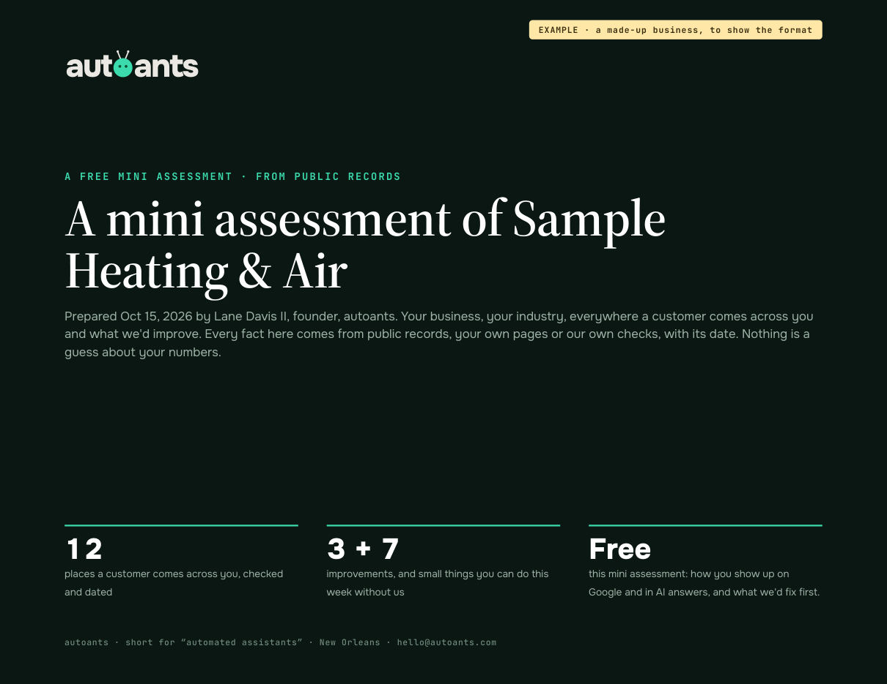
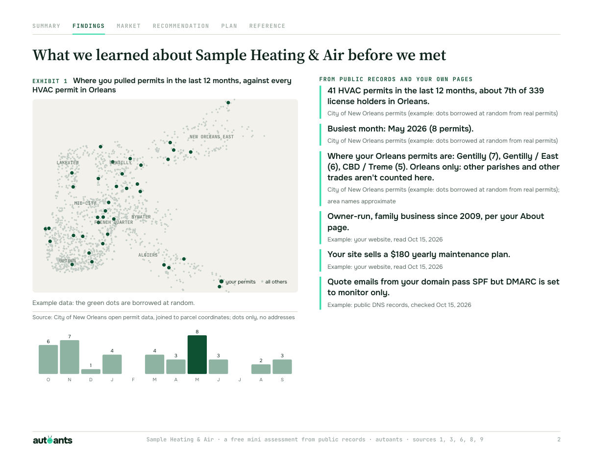
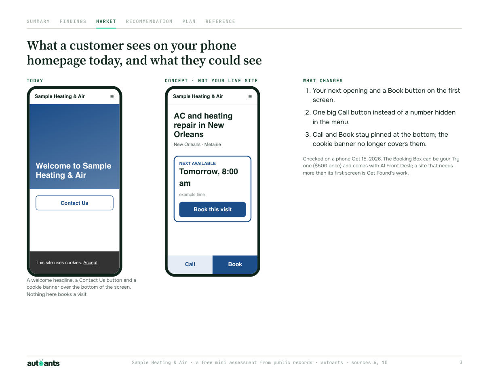
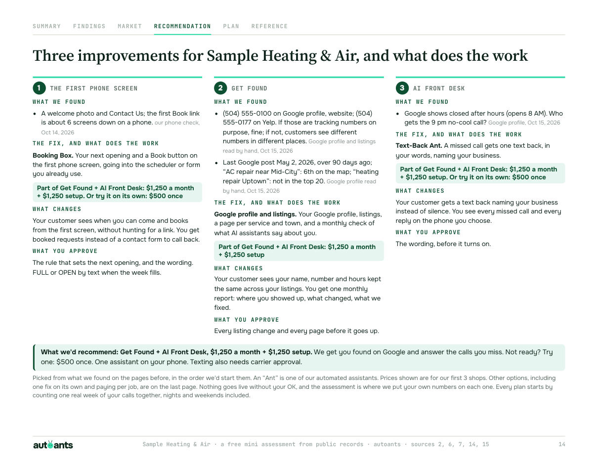

Sample
A sample free mini assessment
This is the written report from a free mini assessment, made for a made-up HVAC company called Sample Heating & Air, so you can see what you’d get before you ask for yours.
Example only, not a client result. The business, its competitors and its numbers are invented. The format, the checks and the kinds of sources are the same ones I use for a real business. Prices inside are as of the report’s date; current ones are on the Prices page.
Open the sample (PDF, 23 pages) Book my free mini assessment
Your real one comes with two things
- A written report like this one, about your business, from public information.
- A 15-minute call to go through it and name the one fix that would help most.
It’s long because every page has a real finding with its date and source. The call gives you the short version.
A few pages from it




What’s inside
- Summary: what's in it and what went into it
- What we learned about the business before we met
- What a customer sees on the phone homepage today, and what they could see
- Where customers and AI assistants look for you, listed or not
- Every place a customer comes across the business, checked and dated
- The leak: how long an after-hours call waited for a reply
- How easily AI assistants can read the home page
- Questions people ask YouTube about the trade here, unanswered
- Who pulls the permits in the trade, and where the business ranks
- What a customer runs into at shops nearby
- Past installs coming due for service or replacement
- Worth knowing in the trade this year
- Rule changes that affect the trade
- Three improvements, and what does the work
- Small things to do this week, without us
- Room to grow: side lines that use the customers and license you already have
- Government work worth a look
- Your numbers: five minutes on the 15-minute call
- The business a year from now
- Sources and methods: where every number comes from
A real one prints only the pages with a real finding for your business, so yours may be shorter.